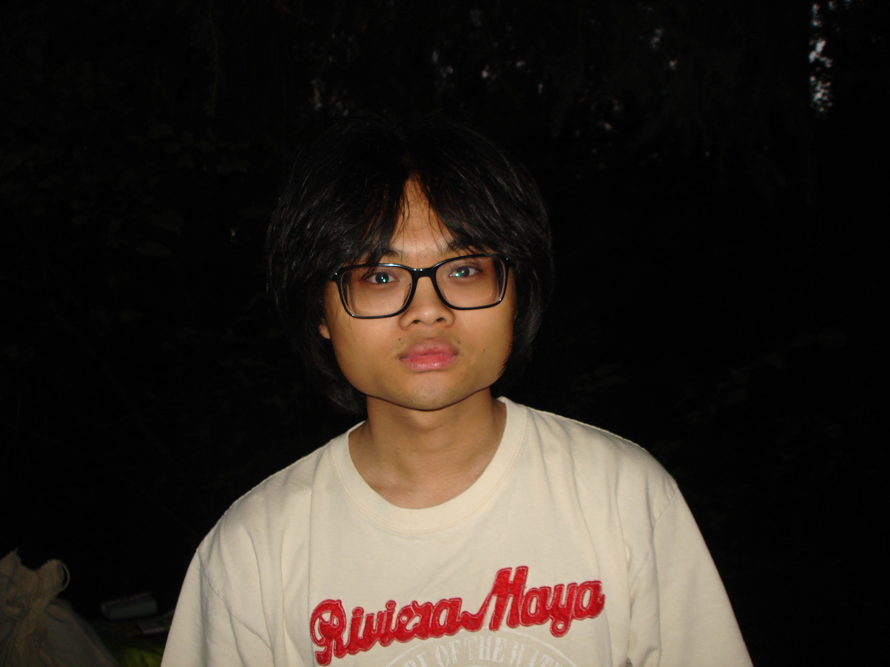

about me
i'm jayden quilay, a student at bcit's new media and web development program.
growing up, i always considered myself to be more into creative arts rather than into traditional academics.
i am more fascinated by the art and design of things, which led me to pursue a career in photography. graphic design and ui/ux also fall into this category, as it was natural for me to get into.
i haven't done much to showcase my skills, but eventually i'll be able to provide examples of my work in the near future.
more about me
i'm 19, being born in vancouver, canada, and i'm ethnically filipino.
avid music listener and video game fanatic in my free time. i mostly play overwatch2, rainbow6siege, teamfortress2 and chivalry2.
i'm also a big hockey fan, and of course my favourite team is the vancouver canucks.
heres some cool facts about me!
- conceptualized a clothing brand called starborne*
- built some custom keyboards and willing to get more.
- highly interested in geography and history, with niche interests such as flag designing and map designing.
- collecting vinyls of albums that i've enjoyed. i also like collecting other things like plushies, toy cars, and shoes.
- from 2017-2021, kpop was my most played genre of music.
- really into fashion.